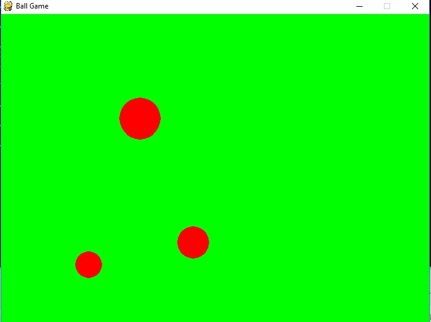
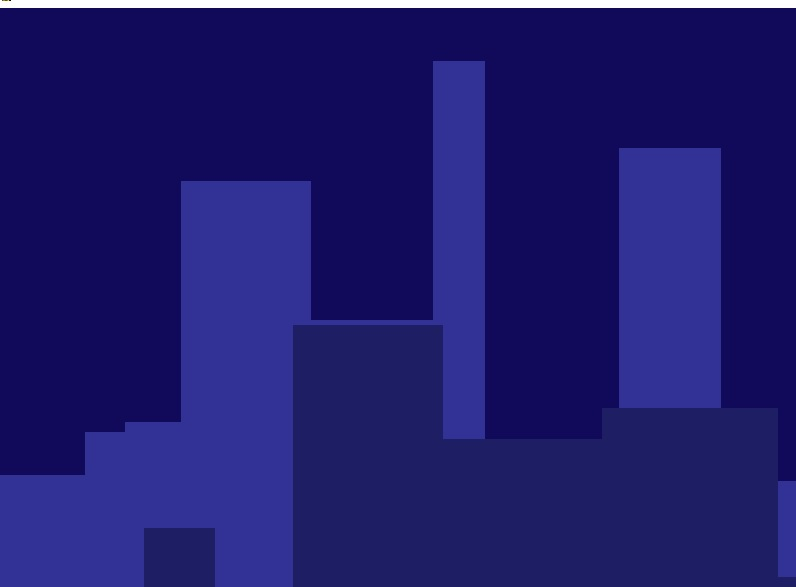
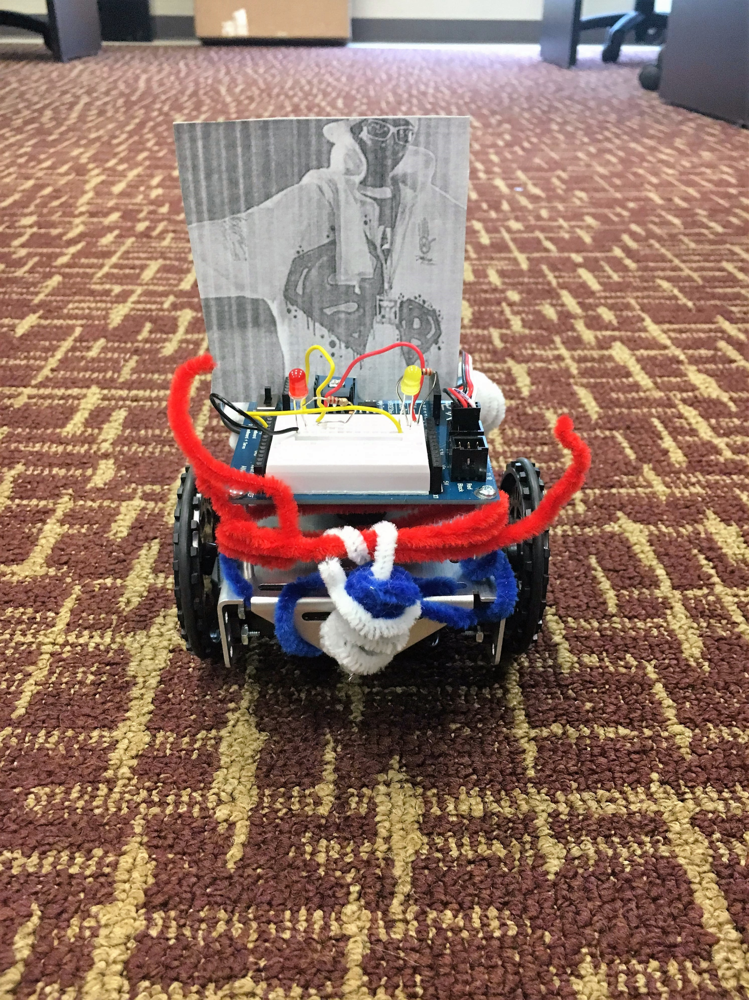

Welcome to the portfolio page for Kristen Jones, a girl who codes!
My name is Kristen Jones and I am 16 years old. I decided to take Girls Who Code the summer of my Junior year to increase my knowledge in coding and it exceeded my expectations. I never knew there were so many occupations that were surronded just by coding. I feel like because of this, I will pursue a career in Computer Science.
In my free time I run cross country and track, write stories and love to watch movies. In 2014, I was ranked the 7th fastest 14 year old in the nation in the 2000 meter Steeple Chase (a 5 lap race with hurdles and water jumps- see picture above or click the link and scroll until you see 2000m steeplechase). With success always on my mind, I always keep this memory in my back pocket to remind me that hard work really does pay off!
To connect with me, follow me on social media and other sites!
TWITTER : @kjonesrunnner
INSTAGRAM : @kjonesrunner
LINKEDIN: Kristen Jones
Scratch was the first program that I learned and at first I found it to be very difficult. I couldn't do simple funtions such as getting a Sprite (character) to move across the screen! After lots of help and notes, I was able to create a small game (see below) that would allow the user to click on objects and answer questions for the Sprites to do their 'jobs'.
click me to see the project!By typing "yes", the cat sprite will draw a colorful window and will turn into a dog. By typing "no" the cat sprite will say "that's not very nice" and it will disappear. After that series of events, if you click the space bar, the cat sprite will return to the origin and then ask you the same questions, however , if you say "yes" the cat sprite will draw a letter 'k' and then say "darn it didn't work" and then disappear. If you type "no" it will say "that's not very nice" and then stay there until you restart the system.
This is a very simple game, however at the time this was very difficult for me to create. Looking through the rest of my pages, you will see my work progress.
When I first started Python, my immediate thought was "this is going to be harder than Scratch". I started to discourage myself before I even started working on it, but I ended up enjoying it! It wasn't my favourite thing in the world, but I felt like a true coder and I was proud of myself. This is an image of a 'bouncing ball' mini activity. Three balls, of different sizes, flash different colors and bounce across the screen at different rates!
Pygame, which was similar to Python,was harder. Although it seemed like it was the same code, I confused myself so many times. The HARDEST project we had was in Pygame and we had to create a city-scroller. I was lucky to be placed in a group with people who understood what to do and were understanding! Without my group, the project would not have been completed (especially by me alone). The outcome was awesome, the code to get there was beyond stressful.
This was for a project called "Obamacon" where the objective was to change the colors of a picture without adding filters. Click the button below to see the result!
This is a picture of my group's Arduino which we name "Soulja Bot" after making our robot dance to the song "Soulja Boy". This was probably the best project we did and the most fun! I learned about an entire new world to coding and I was beyond proud to be a part of it.
